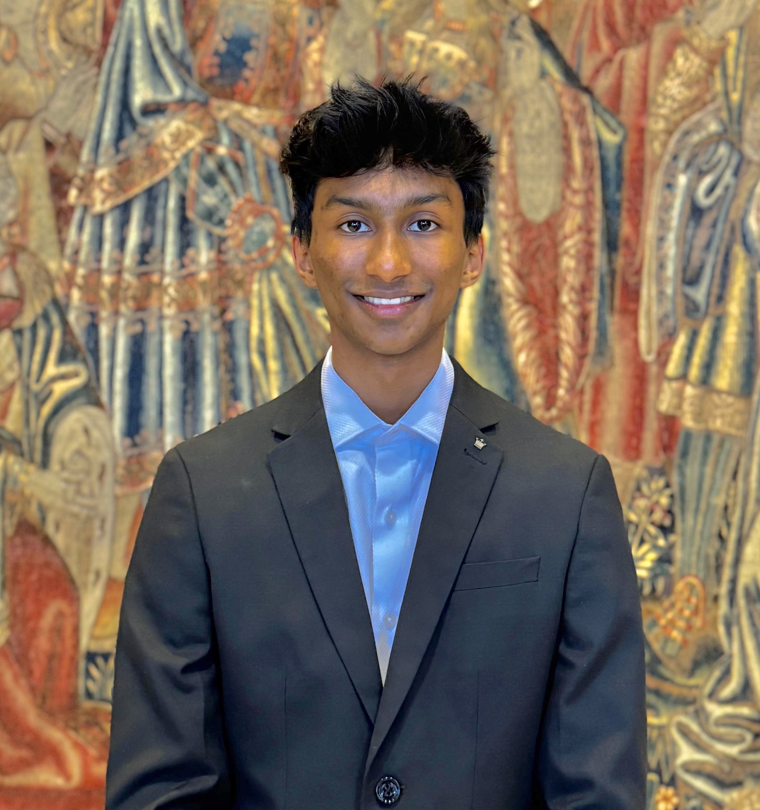

About Me
Hello! I’m Mithun Makam, a Biochemistry and Molecular Biology student at Boston University pursuing a minor in Computer Science. I’m interested in how understanding disease at the molecular level can lead to better ways to detect and treat it. My interests include cancer biology, molecular diagnostics, and the growing role of computational tools in biological research.
Studying computer science alongside biology has encouraged me to think about scientific problems from different perspectives. I enjoy the precision and logic of programming, as well as the curiosity and creativity involved in experimental research. I hope to bring these skills together as I continue exploring biotechnology and translational science.
Beyond the Classroom
Teaching and connecting with others are also important parts of my college experience. As a peer tutor, I help students work through challenging concepts in organic chemistry and physics. Tutoring has taught me to adapt my explanations, listen carefully, and help others build confidence in their own problem-solving abilities.
As a CAS Dean’s Host, I also have the opportunity to share my experience at Boston University with prospective students and their families. Outside academics, I enjoy weightlifting and playing soccer. These activities give me time to recharge, challenge myself, and connect with people beyond the classroom and laboratory.
Looking Ahead
After graduation, I hope to work in research to strengthen my experimental skills and explore the scientific questions I would like to pursue in graduate school. I’m particularly drawn to work that connects an understanding of disease mechanisms with practical advances in diagnostics and treatment.
This website brings together my education, research experience, projects, and skills. Explore the pages to learn more about what I’ve been working on and the experiences that continue to shape my interests.